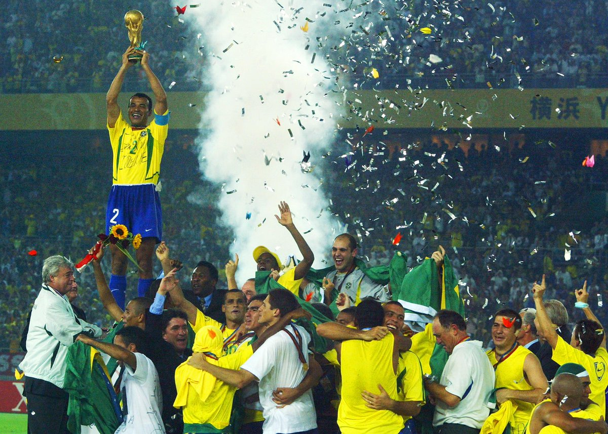
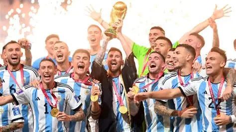

Seleção Brasileira

Conhecida pelo estilo de jogo criativo, a seleção brasileira é a única que disputou todas as edições da Copa do Mundo.
Seleções pelo mundo

Conhecida pelo estilo de jogo criativo, a seleção brasileira é a única que disputou todas as edições da Copa do Mundo.

Rival histórica do Brasil, a Argentina tem uma das torcidas mais apaixonadas do futebol mundial.